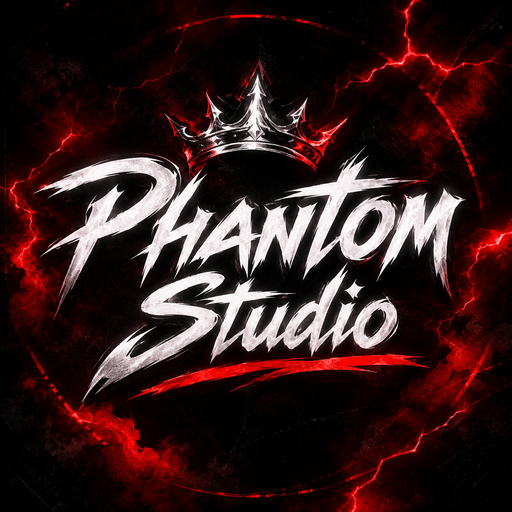
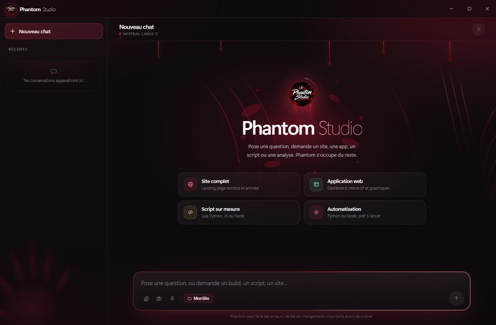
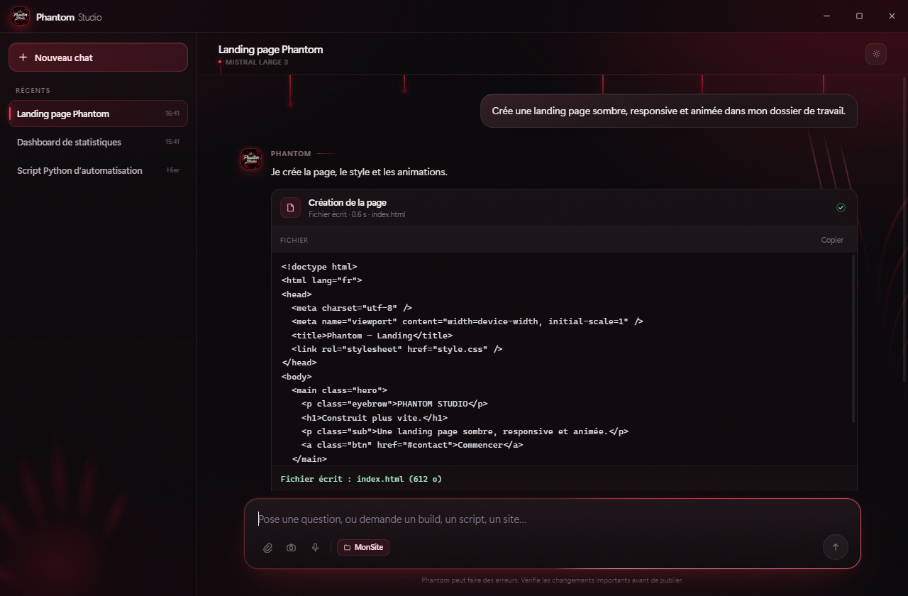

Sites & applications
Landing pages, dashboards, interfaces complètes. HTML, CSS, JS, React : il gère la stack de bout en bout.
HTML · CSS · JS
Phantom StudioPhantom Studio transforme tes idées en sites, applications et scripts. Tu choisis un dossier, tu demandes, il livre. Simple, rapide, carré. 🔥

Du site vitrine au script d'automatisation, Phantom s'adapte à ce que tu lui demandes. Sans changer d'app.
Landing pages, dashboards, interfaces complètes. HTML, CSS, JS, React : il gère la stack de bout en bout.
HTML · CSS · JSPython, Node, Lua, C#, Java, SQL… Du petit script au projet complet, avec du code propre et optimisé.
PYTHON · NODE · LUAIl lit, crée et modifie les fichiers directement dans le dossier que tu choisis. Tout reste chez toi.
FICHIERS · COMMANDESColle une image ou prends une photo. Phantom l'analyse et s'en sert pour répondre ou construire.
VISIONTu parles, il écrit. La dictée intégrée transforme ta voix en demande, directement dans le chat.
MICROLes réponses s'affichent en direct, mot après mot. Tu vois Phantom travailler, pas un écran figé.
TEMPS RÉELChoisis un dossier une fois. Phantom crée les fichiers au bon endroit, lit l'existant, corrige et vérifie. Pas de copier-coller, pas de projet dans le vide.

Récupère l'application Windows, ouvre l'.exe et laisse le chargement se faire.
Clique sur « Choisir un dossier » et sélectionne le projet où Phantom doit travailler.
« Crée un site vitrine », « corrige ce bug », « fais un script Python ». Phantom s'occupe du reste.
Application Windows autonome. Pas de compte, clé IA incluse, mises à jour par téléchargement.
Téléchargement direct. Si Windows SmartScreen apparaît : Informations complémentaires → Exécuter quand même.
Une application Windows avec une IA dedans. Tu lui demandes un site, une app, un script ou une analyse, et elle travaille directement dans le dossier que tu choisissons.
Non. La clé IA est intégrée à l'application, pas de compte à créer et rien à configurer. Tu télécharges, tu lances, tu demandes.
Le site et le téléchargement fonctionnent sur tous les appareils. L'application, elle, tourne sous Windows 10 / 11 : sur téléphone ou Mac, le fichier se télécharge mais doit être ouvert sur un PC Windows.
Uniquement dans le dossier de travail que tu sélectionnes. Phantom ne supprime rien sans demande explicite.
Oui. L'application n'est pas signée avec un certificat payant. Clique sur « Informations complémentaires », puis « Exécuter quand même ».